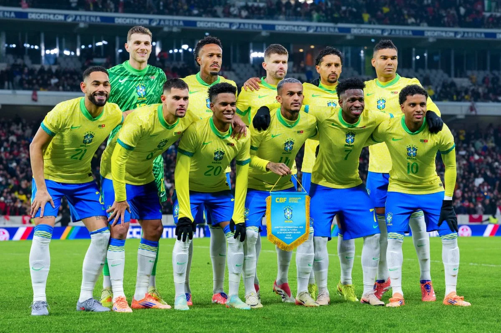

Carlo Ancelotti surpreendeu ao adotar uma lista bastante ofensiva, convocando nove atacantes. Uma das principais novidades foi o retorno de Neymar (atualmente no Santos), chamado pela primeira vez pelo treinador europeu para disputar sua quarta Copa. Contudo, o camisa 10 se recupera de lesão na panturrilha e deve perder a partida de estreia. Nomes como Éder Militão, Rodrygo e Estêvão ficaram fora do torneio por contusões prévias
A Seleção Brasileira é a maior vencedora da história das Copas do Mundo, com cinco títulos conquistados (1958, 1962, 1970, 1994 e 2002). Única equipe a participar de todas as edições do torneio, a trajetória do Brasil é marcada por momentos de genialidade e grandes decepções